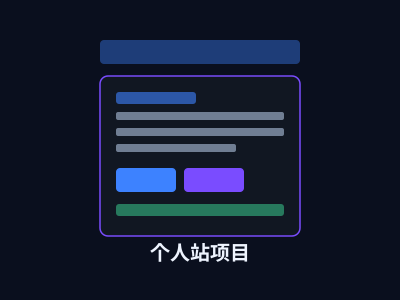

← 返回项目
Personal Website
个人站项目
基于纯前端技术栈构建的个人品牌站点，采用深色/浅色双主题切换与移动端优先的响应式设计。站点整合了项目展示、技术博客、AI 助手、工具箱、简历、联系页等六大功能模块，是个人技术品牌、项目成果与学术积淀的集中展示平台。部署于 GitHub Pages，实现持续集成与自动发布。

// 站点架构
├── index.html 首页
├── projects.html 项目页
├── blog.html 博客页
├── about.html 关于我
└── toolbox.html 工具箱
项目背景
作为一名计算机专业学生，需要一处能够系统展示个人品牌、技术项目、学术成果与职业履历的数字空间。个人站正是为此而生——它不仅是项目与简历的展示窗口，更是技术成长历程的见证。
项目从零开始设计，不依赖任何前端框架，以纯 HTML、CSS 和 JavaScript 构建，力求在轻量的前提下实现美观、流畅、功能完整的用户体验。采用 GitHub Pages 部署，实现代码推送即发布的持续集成流程。
核心模块
六大页面构建完整品牌体验
首页 Hero
个人简介与技术定位展示，精选项目与荣誉奖项模块，快速浏览核心信息与社交链接入口。
项目展示
项目列表页与详情页双层结构，含分类筛选、技术标签、指标数据等丰富信息展示。
博客模块
学术论文与技术文章展示区，图文混排布局，结构化展示技术积累与学术成果。
工具箱
实用在线工具聚合页，提供编码中常用的辅助功能，持续扩充中。
技术实现
- 基于 CSS 变量实现深色/浅色双主题系统，主题偏好通过 localStorage 持久化
- 移动端优先的响应式设计，三段式断点（560px / 820px / 940px）全面适配各尺寸设备
- 背板网格纹理与多层级径向渐变的独特视觉风格
- 无框架依赖，纯 HTML/CSS/JS 构建，加载速度快、可维护性强
- SEO 友好的语义化 HTML 结构与 Meta 信息配置
设计亮点
- 品牌化视觉语言：统一的配色系统、圆角体系与间距规范
- 毛玻璃导航栏 + 粘性定位，提升页面导航体验
- 项目详情页的终端风格代码展示区，增加技术感
- AI 助手内嵌页面，作为独立功能入口展示 RAG 应用成果
- 主题切换按钮动画交互，提升界面细腻度
欢迎浏览本站
这就是你当前访问的站点，欢迎浏览各页面并留下宝贵意见。